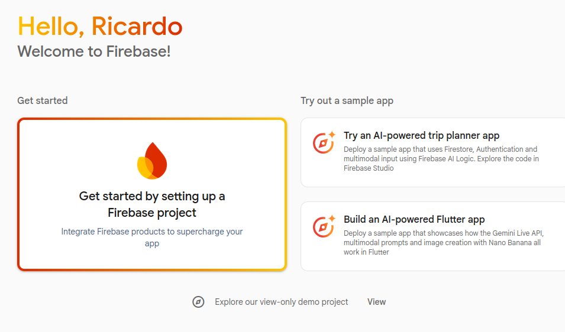
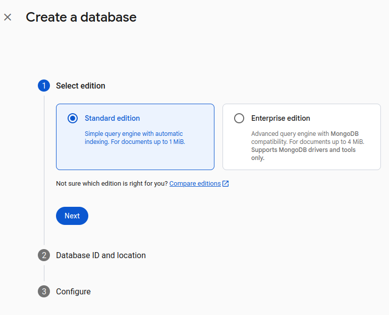
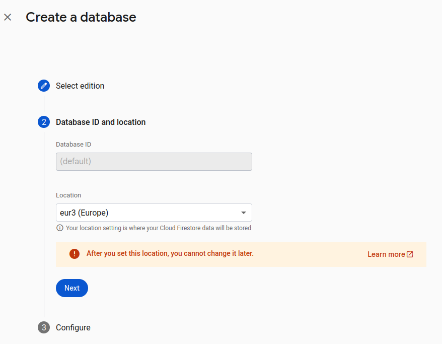
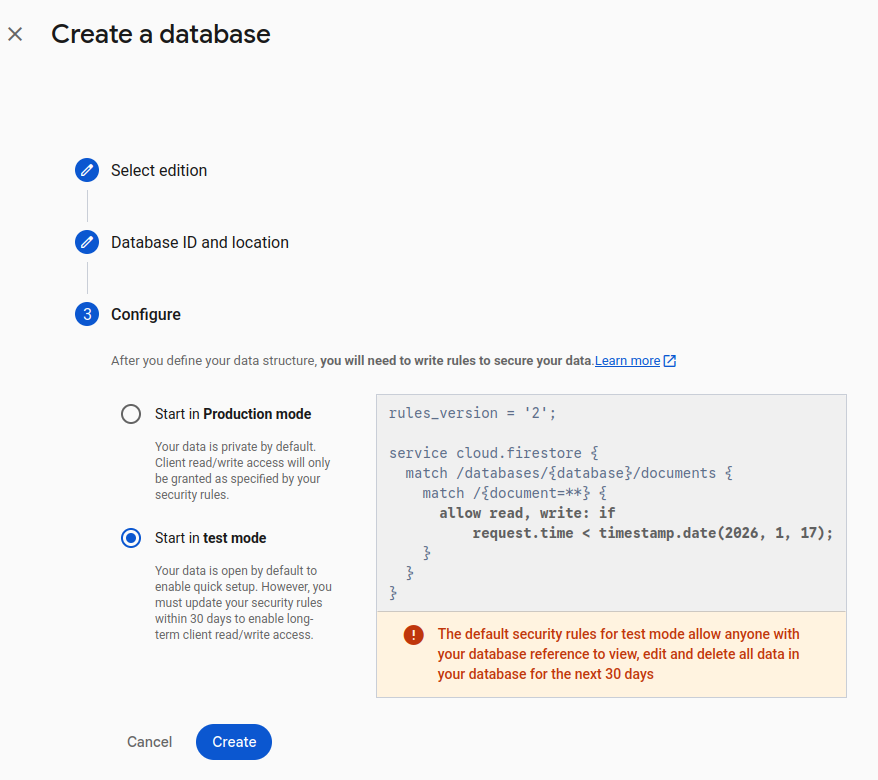
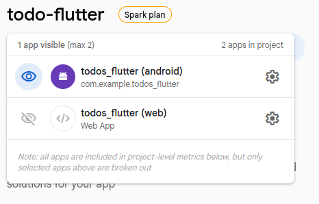
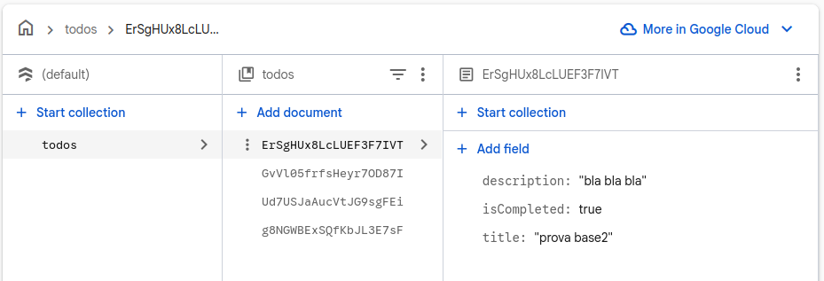

Unit 6.2 Using Firestore
To show how to use Firestore in a Flutter application, we are going to create a simple TODO list app that allows users to add, view, update, and delete TODO items stored in a Firestore database.
Setting up Firebase for Flutter
To use Firebase in your Flutter app, you need to set up a Firebase project and configure your Flutter app to connect to it. Follow these steps to get started:
Create a Firebase Account
To get started with Firebase, you'll need to create a Firebase account. Follow these steps:
- Go to the Firebase website.
- Click on the "Get Started" button.
- Sign in with your Google account. If you don't have a Google account, you'll need to create one.
- Once signed in, you'll be directed to the Firebase console where you can create and manage your Firebase projects.
Install Firebase CLI
The Firebase CLI (Command Line Interface) is a tool that allows you to interact with Firebase services from your terminal.
Installing the Firebase CLI depends on your operating system and if you want to install it via npm or other methods. The most common way is via npm.
Follow the instructions from the official Firebase documentation to install the Firebase CLI on your system: Install the Firebase CLI
Once installed, you can verify the installation logging to your Firebase account by running the following command in your terminal:
1 | |
This will open a browser window where you can sign in with your Google account. After signing in, you can return to the terminal to continue using the Firebase CLI. You can test that you are logged in by running:
1 | |
This command will list all the Firebase projects associated with your account.
Create the base app
The app we are going to do is a simple TODO list Flutter App. You can download the base project with the basic UI done from this link.
After downloading the project, perform a flutter pub get to install the required dependencies.
Create a Firebase Project
To create a new Firebase project, follow these steps:
- Go to the Firebase Console.
- Click on the "Add project" button. 
- Enter a name for your project and click "Continue".
- (Optional) Enable Gemini AI features for your project and click "Continue".
- (Optional) Enable Google Analytics for your project and configure the settings as desired.
You will see a dashboard for your new project, where you can access various Firebase services and features.
Add Firestore to Your Project
To add Firestore to your Firebase project, follow these steps:
Step 1: Create a Firestore Database
- In the Firebase Console, navigate to your project.
- In the left-hand menu, click on Build -> Firestore Database.
- (Recommended) Open the documentation on the How do I get started? View the docs link.
- Click on the "Create database" button.
- Select the Standard edition and click "Next". 
- Choose a location (for example Europe) for your Firestore database and click "Next". 
- Select Start in test mode and click "Enable". This will allow you to read and write to the database for the next 30 days without any security rules.

Warning: Make sure to set up proper security rules before deploying your application to production.
Step 2: Install the required command line tools
The next step is to add Firebase to your app project.
If you're logged in to the Firebase console, install the FlutterFire CLI by running the following command from any directory:
1 | |
Step 3: Configure your Flutter app to use Firebase
Then, from your Flutter project directory, run the following command to start the app configuration workflow:
1 | |
- The CLI will prompt you to select the Firebase project you created earlier.
- Then, select the platforms you want to configure (iOS, Android, Web, etc.).
- Confirm the configuration, and the CLI will generate the necessary configuration files for your Flutter app. It will create a
firebase_options.dartfile in yourlibdirectory. This file contains the Firebase configuration for your app.
Important
After this initial running of flutterfire configure, you need to re-run the command any time that you:
- Start supporting a new platform in your Flutter app.
- Start using a new Firebase service or product in your Flutter app, especially if you start using sign-in with Google, Crashlytics, Performance Monitoring, or Realtime Database.
Re-running the command ensures that your Flutter app's Firebase configuration is up-to-date and (for Android) automatically adds any required Gradle plugins to your app.
Step 4: Initialize Firebase in your Flutter app
The next step is to initialize Firebase in your Flutter app.
- From your Flutter project directory, run the following command to install the core plugin:
1flutter pub add firebase_core - From your Flutter project directory, run the following command to ensure that your Flutter app's Firebase configuration is up-to-date:
1flutterfire configure - In your
lib/main.dartfile, import the Firebase core plugin and the configuration file you generated earlier:
1 2
import 'package:firebase_core/firebase_core.dart'; import 'firebase_options.dart'; - Initialize Firebase in the
mainfunction before running the app:
1 2 3 4 5 6 7 8
Future<void> main() async { WidgetsFlutterBinding.ensureInitialized(); // Ensure Flutter bindings are initialized await Firebase.initializeApp( options: DefaultFirebaseOptions .currentPlatform, // Initialize Firebase with platform-specific options ); runApp(const MyApp()); } - Rebuild your Flutter application:
1flutter run
If the app runs without errors, Firebase has been successfully initialized in your Flutter app.
Step 5: Add Firebase plugins
Firebase is based on a modular architecture, so you need to add the plugins for the Firebase services you want to use in your app. To use Firestore in your Flutter app, you'll need to add the Firestore plugin.
From your Flutter project directory, run the following command to install the Firestore plugin:
1 | |
Warning
Firebase on Windows is not intended for production use cases, only local development workflows.
If the app runs without errors, Firestore has been successfully initialized in your Flutter app.
If you go to your Firebase Console, you should see that your app is connected to your Firebase project.

Create the Data Model
The data model for our TODO list app is simple. Each TODO item will have the following fields:
id: String. A unique identifier for the TODO item.title: String. The title of the TODO item.description: String. A description of the TODO item.isCompleted: bool. A boolean indicating whether the TODO item is completed. The basic data model class in Dart would look like this:
1 2 3 4 5 6 7 8 9 10 11 12 13 14 15 16 | |
We also need to add methods to convert the TODO item to and from a map.
1 2 3 4 5 6 7 8 9 10 11 12 13 14 15 16 17 18 19 20 21 | |
The first method, toMap, converts a Todo object into a Map<String, dynamic>. The second method, fromMap, creates a Todo object from a Map.
This approach will allow us to serialize and deserialize data that cames form a JSON source, so it works also with general APIs.
But it is also possible to create the methods to convert to/from Firestore documents directly, using the DocumentSnapshot class.
1 2 3 4 5 6 7 8 9 10 11 12 13 14 | |
This method has the advantage of directly getting the document ID from Firestore, which can be useful for updating or deleting documents later. We will use this method instead of fromMap when working with Firestore.
DocumentSnapshot
The DocumentSnapshot class represents a snapshot of a document in Firestore at a specific point in time. It contains the data of the document as well as metadata such as the document ID and whether the document exists.
You can use the data() method to retrieve the data of the document as a map, and you can access the document ID using the id property.
Database connection
To connect to Firestore from your Flutter app, you can use the FirebaseFirestore class provided by the cloud_firestore plugin.
1 2 3 | |
This code initializes a Firestore instance that you can use to interact with your Firestore database.
CRUD Operations
To perform CRUD (Create, Read, Update, Delete) we are going to create the class TodoDao, inside the data folder that will handle all the operations with Firestore.
1 2 3 4 5 6 7 8 | |
The first method we are going to create is the getTodos method, which retrieves all TODO items from the Firestore database.
1 2 3 4 5 6 7 8 9 10 11 12 | |
Here we are returning a Stream of List<Todo>, which allows us to listen for real-time updates to the TODO items in the Firestore database. Each time the database changes, the stream will emit a new list of TODO items.
The snapshots() method returns a stream of QuerySnapshot objects, which we then map to a list of Todo objects using the fromFirestore factory constructor we defined earlier.
To retrieve a songle Todo item by its ID, we can create the getTodoById method:
1 2 3 4 5 6 7 8 9 10 | |
Using doc(id), we reference a specific document in the 'todos' collection. The snapshots() method returns a stream of DocumentSnapshot objects for that document, which we then map to a Todo object using the fromFirestore factory constructor.
This method returns a Stream<Todo>, which allows us to listen for real-time updates to a single TODO item in the Firestore database.
To add a new TODO item to the Firestore database, we can create the addTodo method:
1 2 3 4 5 6 | |
This method takes a Map<String, dynamic> representing the TODO item data and adds it to the 'todos' collection in Firestore using the add method. The add method automatically generates a unique ID for the new document.
The method returns a Future<void>, which completes when the TODO item has been successfully added to the database.
To update an existing TODO item in the Firestore database, we can create the updateTodo method:
1 2 3 4 5 6 | |
This method takes the ID of the TODO item to be updated and a map representing the updated TODO item data. It uses the update method to update the document with the specified ID in the 'todos' collection. It also returns a Future<void>, which completes when the TODO item has been successfully updated in the database.
Finally, to delete a TODO item from the Firestore database, we can create the deleteTodo method:
1 2 3 4 5 6 | |
References:
The repository pattern
At this point, we can use directly the TodoDao class to perform CRUD operations on our Firestore database. However, it is a good practice to use the repository pattern to abstract the data access layer from the rest of the application.
In our case, we create a method for each CRUD operation in the TodoRepository class that internally calls the corresponding method in the TodoDao class. These methods are static, so we don't need to create an instance of the TodoRepository class to use them.
1 2 3 4 5 6 7 8 9 10 11 12 13 14 15 16 17 18 19 20 21 22 23 24 25 26 27 28 29 30 31 32 33 34 35 | |
Note how, in the insertTodo and updateTodo methods, we convert the Todo object to a map using the toMap method before passing it to the TodoDao methods.
Saving new TODO items
The steps to insert a new TODO item are as follows:
- The user clicks the "Add" button in the Todo List Screen.
- The app navigates to the Todo Edit Screen in "save" mode.
- The user fills in the TODO item details and clicks the "Save" button.
- The app creates a new
Todoobject with the provided details. - The app calls the
insertTodomethod of theTodoRepositoryto save the new TODO item to Firestore. - The app navigates back to the Todo List Screen.
First, we are going to create the method to save the new TODO item in the TodoProvider class:
1 2 3 4 5 6 7 8 9 10 11 12 13 | |
The values for the new TODO item are taken from the provider's private variables.
In the EditTodoScreen, we call the saveTodo method when the user clicks the "Save" button:
1 2 3 4 5 6 7 8 9 10 11 12 13 14 15 16 17 18 | |
The onPressed callback already has the logic to detect if the Todo is valid (has some characters in the title field) and if we are in "save" or "update" mode. If the id is empty (because the todo is new), we are in "save" mode, so we call the saveTodo method of the provider.
The app navigates back to the Todo List Screen, but the new todo is not yet visible. However, if you go to the Firestore section of your Firebase Console, you should see the new TODO item added to the 'todos' collection after saving it from the app.

Retrieving the list of TODO items
To retrieve the list of TODO items from Firestore and display them in the Todo List Screen, we need to update the TodoListProvider class to use the getAllTodos method from the TodoRepository.
First, we need some fields to represent the state: a Todo List to store the retrieved TODO items; an isLoading boolean to indicate if the data is being loaded; and a Stream Subscription to manage the stream of TODO items ang get real-time updates:
1 2 3 4 5 6 7 8 9 10 11 12 13 14 | |
Next, the setTodoList method updates the TODO list and notify listeners:
1 2 3 4 5 6 7 8 9 10 11 12 13 14 15 16 17 18 19 20 21 22 23 24 25 26 27 28 29 30 31 32 33 34 35 36 37 38 39 | |
This methos first checks if there is already a subscription to the TODO stream. If not, it marks the loading state as true and notifies listeners.
Then, it calls the getAllTodos method from the TodoRepository, which returns a Future<Stream<List<Todo>>>. When the future completes, we listen to the stream and update the _todoList with the retrieved TODO items. We also handle errors that may occur during the listening process.
In the TodoListScreen, we call the setTodoList method after the first frame is rendered in the initState method:
1 2 3 4 5 6 7 8 9 | |
In the Scaffold body, we want to manage the isLoading and empty list states:
1 2 3 4 5 6 7 8 9 10 | |
Next, we update the itemCount of the ListView.builder to use the length of the todoList from the provider:
1 2 3 4 5 6 | |
Now, we update the ListTile parameters to show the TODO item details:
1 2 3 4 5 6 7 8 9 10 11 12 13 14 15 16 17 | |
Finally, update the onTap callback to navigate to the EditTodoScreen in "update" mode: fisrt, we clear the todo provider state, then we set the todo ID to load, and navigate to the edit screen.
1 2 3 4 5 6 7 8 9 10 11 12 13 14 | |
Check that the list of TODO items is displayed correctly in the Todo List Screen. You should see the TODO items retrieved from Firestore, and any changes made to the database (such as adding, updating, or deleting TODO items) should be reflected in real-time in the app.
Updating TODO items
To update an existing TODO item in Firestore, we need to implement the update functionality in the TodoProvider class and the EditTodoScreen.
The steps to update a TODO item are as follows:
- In the Todo Edit Screen, the app gets the todo id from the provider and retrieves the TODO item details from Firestore using the
getTodoByIdmethod of theTodoRepository. - The app updates the UI fields with the retrieved TODO item details.
- The user modifies the TODO item details and clicks the "Save" button.
- The app creates a
Todoobject with the updated details. - The app calls the
updateTodomethod of theTodoRepositoryto save the updated TODO item to Firestore. - The app navigates back to the Todo List Screen.
First, we create the getTodoById method in the TodoProvider class:
1 2 3 4 5 6 7 8 9 10 11 12 | |
As we are getting the TODO item as a stream, we listen to it and update the provider's private variables with the retrieved TODO item details.
In the EditTodoScreen, we call the getTodoById method in the initState method:
1 2 3 4 5 6 7 8 9 10 11 12 13 14 15 16 17 18 | |
Now, when you tap on a Todo item in the Todo List Screen, the app navigates to the Edit Todo Screen and retrieves the TODO item details from Firestore, populating the UI fields with the current values.
To update the TODO item when the user clicks the "Save" button, we need to create the updateTodo method in the TodoProvider class:
1 2 3 4 5 6 7 8 9 10 11 | |
This method creates a Todo object with the updated details from the provider's private variables and calls the updateTodo method of the TodoRepository to save the updated TODO item to Firestore.
Then, in the EditTodoScreen, we call the updateTodo method when the user clicks the "Save" button:
1 2 3 4 5 6 7 8 9 10 11 12 13 14 15 16 | |
Check that updating a TODO item works correctly. When you modify the details of a TODO item in the Edit Todo Screen and click the "Save" button, the changes should be saved to Firestore, and the updated TODO item should be reflected in real-time in the Todo List Screen.
Deleting TODO items
To delete a TODO item from Firestore, we need to implement the delete functionality in the TodoProvider class :
1 2 3 4 5 | |
Then, call the deleteTodo method when the user clicks the "Delete" button in the EditTodoScreen:
1 2 3 4 5 6 7 8 9 10 11 | |
Done! Now your app can perform CRUD operations on TODO items using Firestore as the backend database. You can add, retrieve, update, and delete TODO items, and the changes will be reflected in real-time in the app.
Queries
Firestore provides powerful querying capabilities that allow you to retrieve documents based on specific criteria. these queries can be used with get() for one-time retrieval or with snapshots() for real-time updates.
For example, to retrieve only the completed TODO items, you can use the where method to filter the documents based on the isCompleted field:
1 2 | |
After creating a query object, use the get() function to retrieve the results:
1 2 3 4 5 6 7 8 | |
The where() method takes three parameters: a field to filter on, a comparison operator, and a value. Cloud Firestore supports the following Flutter comparison operators:
isLessThanisLessThanOrEqualToisEqualToisGreaterThanisGreaterThanOrEqualToisNotEqualToarrayContainsarrayContainsAnywhereInwhereNotIn
Examples:
1 2 3 4 5 6 7 | |
Compound queries
You can combine constraints with a logical AND by chaining multiple equality operators (== or array-contains). However, you must create a composite index to combine equality operators with the inequality operators, <, <=, >, and !=:
1 2 3 4 | |
To perform OR queries, use the whereIn, whereNotIn, or arrayContainsAny operators:
1 2 | |
Another way that involves different fields is to use the Filter.or method:
1 2 3 4 5 6 | |
Queries reference: Query data in Cloud Firestore
Order and limit data
You can order the results of a query using the orderBy method.
1 | |
By default, the results are ordered in ascending order. To order in descending order, you can pass descending: true as a second parameter:
1 | |
You can limit the number of results returned by a query using the limit method:
1 2 3 4 | |
You can combine where, orderBy, and limit methods to create complex queries:
1 2 3 4 5 | |
Order and limit reference: Order and limit data